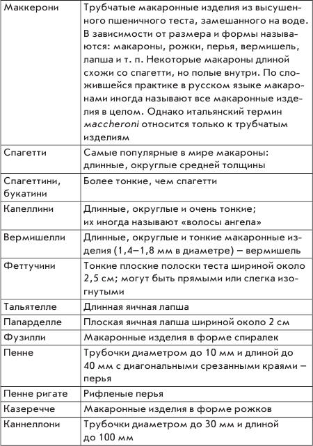
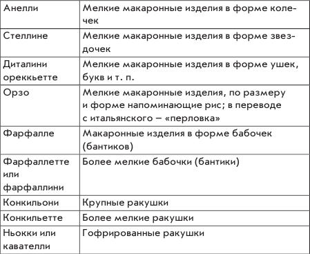

Что такое спагетти, макароны, фетучини… паста. Хвала богу Вулкану

Когда в следующий раз, уважаемые хозяйки, вы приступите к приготовлению поражающего воображение блюда из макарон, то для вдохновения выберите по вкусу какую-либо из прелестных легенд, относящихся к этому уникальному продукту. Одна из них гласит, что изобретению болонской лапши мы обязаны невесте герцога Альфонса д'Есте — красавице Лукреции Борджиа. Вполне возможно, что, кроме жениха, у нее был тайный воздыхатель в лице повара, готовившего свадебные блюда. Он посвятил невесте свое создание: добавил в тесто много яиц, с помощью оливкового масла сделал его мягким, блестящим и нарезал тонкими полосками — как длинные светлые волосы Лукреции.
Другая легенда (ох эти болонские кулинары!) рассказывает о юном поваре богатого болонского купца, вылепившем из теста розу. Предание не сохранило подробностей, но считается, что безвестный влюбленный придумал столь необычную форму макарон, тайно созерцая пупок жены своего хозяина, предпочитавшей спать обнаженной.
Если вы думаете, что машины для изготовления макарон появились в XVII веке, то вы совершенно правы. Однако не только в поэтической части макаронного дела не обойтись без легенды. В древнегреческой мифологии существует сказание о том, что бог Вулкан изобрел машину, которая изготавливала длинные и тонкие нити из теста — прообраз любимых во всем мире спагетти. Археологические находки — скалки и ножи для резки теста — доказывают, что лапшой лакомились еще жители Древней Греции.
Первое упоминание о макаронах встречается в кулинарной книге Аппикуса, жившего в I веке до нашей эры при императоре Тиберии. Древнеримский шеф-повар описывает рецепт блюда, напоминающего десертный пирог из макарон. Но, как и во многих других областях человеческого бытия, пионерами в употреблении макарон, видимо, были этруски. В одном из некрополей этого продвинутого народа обнаружены барельефы, датируемые IV веком до нашей эры. Изображенная на них кухонная утварь не оставляет сомнений: этруски со своими верными этрусками готовили макароны.
Увы, до нас не дошло, знали ли граждане Этрурии, а также Марко Поло (который привез в 1292 году из Китая в качестве сувенира тонкие трубочки из теста, сделанные, правда, из рисовой муки), что при варке волшебного продукта нужно взять обязательно большую кастрюлю. Простейший математический расчет — минимум 2,25 л воды с добавлением 1 ст. ложки соли на каждые 225 г макарон любого вида — позволит вам насладиться двумя полноценными порциями основного блюда с соусом и четырьмя порциями закуски.
Опускайте макароны только в кипящую подсоленную воду и энергично единожды размешайте, чтобы макароны не слиплись. Если вы варите длинные макароны (например, спагетти), аккуратно надавите на них и уложите по периметру кастрюли и ни в коем случае не накрывайте ее крышкой. Засеките время: качественные макароны обычно варятся 10–12 минут, но с учетом их формы.
Если вы впервые варите макаронные изделия того или иного производителя, то проверить, готовы ли они, можно одним-единственным способом — попробовать их. Начните дегустацию через 8 минут от момента закипания и пробуйте на 9-ю, 10-ю и т. д. минуты. Иногда нужно поварить макароны на минуту меньше, но подержать на огне минутой больше, перемешав с ароматным соусом.
Макароны варите до той стадии, которая по-итальянски красиво называется аль денте (по-нашему — «на зубок»), иными словами, слегка не доваривайте. Однако аль денте или не аль денте — не самое главное. Главное — это соус, и не только из-за того, что его приготовление, как и любой другой вид искусства, требует времени. Основная трудность, как всегда, состоит в выборе: соусов насчитывается более 10 000. Но вам поможет основное правило: чем короче и толще макароны — тем гуще соус.
Готовые макаронные изделия откиньте на прогретый кипятком дуршлаг, но не передержите их в нем: немного отвара сохранит изделия от пересыхания. Более того, отлейте несколько ложек отвара и добавьте их в соус: макароны лучше пропитаются его вкусом.
Подавайте результат вашего творчества на подогретых тарелках, а если собравшимся за вашим столом предстоит отведать спагетти, то лучше всего воспользоваться специальными щипцами, отделяющими одну порцию от другой — во избежание разборок из-за неравномерного распределения изумительного кушанья. Щипцы поднимайте высоко, чтобы все видели: вы не желаете военных действий.
Избежав вендетты, но не отказавшись от виртуального, однако все же путешествия по Италии, прочитайте вслух нижеследующую краткую таблицу с некоторыми названиями видов пасты (так итальянцы называют блюда из макаронных изделий), чтобы насладиться прекрасным звучанием итальянского языка, а впоследствии — и вкусом удивительных блюд.


Великий Джоаккино Россини и непревзойденный тенор всех времен и народов Энрико Карузо были не только страстными любителями пасты, но и создателями собственных рецептов великолепного кушанья. Распознать фортиссимо в их немузыкальных творениях совсем нетрудно…
В современной Японии до сих пор на Новый год предлагают гостям тонкие и очень длинные макароны. Они символизируют успех, долголетие и процветание: у кого макаронина длиннее — тот самый счастливый.
С пожеланием вам самых длинных макарон, и не только на Новый год, Гера Треер, автор-составитель